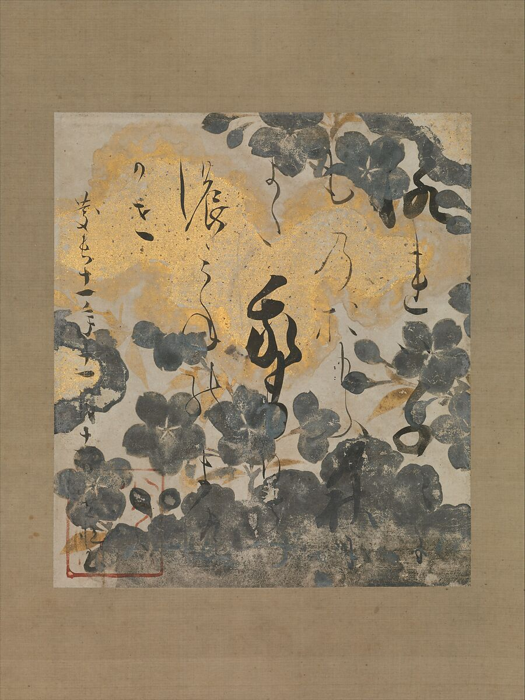
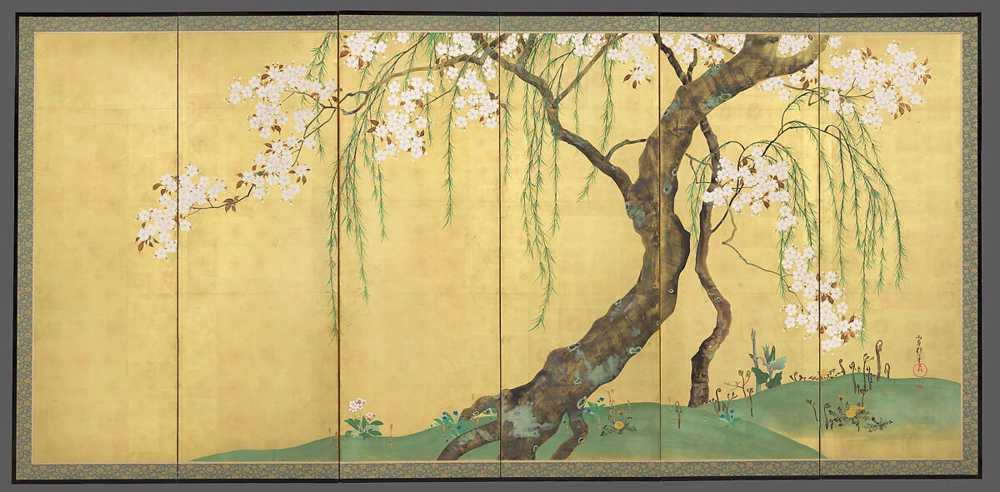

折れる橋が、視線を運ぶ。
左下から斜めに上がり、水平に伸び、再び右上へ。橋の角度の切り替えが、横長の画面を読む道筋になります。
本文試作・実作品画像3点収録 / 書と絵の比較セット（解説・出典付き） · 2026-11-01
後世に整理された様式・芸術的継承の系譜
琳派
このページの絵には、橋のまわりに花がくり返し描かれています。
花のない所には、広い金色が残っています。
りんぱでは、花や木、昔の物語をもとに、絵や文字で作品をつくりました。
後の時代の人たちも、前の作品から学びました。
一つの学校に、みんなが集まっていたわけではありません。
LOOK AT THE WORK / 実作品を見る

画像を表示できませんでした。下の所蔵元リンクから作品を確認できます。
RINPA · 1709年以後
尾形光琳 / The Metropolitan Museum of Art
掲載は六曲一双のうち一隻。画像1点として収録し、左右の位置は未確定として扱います。光悦の色紙・抱一の屏風と合わせ、書・絵・時代をまたぐ表現を比較できます。
左下から斜めに上がり、水平に伸び、再び右上へ。橋の角度の切り替えが、横長の画面を読む道筋になります。
青紫の花と細長い緑の葉が群れを作ります。同じ形の単純な等間隔ではなく、群れの幅と空きを比べてみてください。
橋や花の間、右下に大きく残る金色の面。何も描かれていない部分が、密集した花や橋の輪郭を際立たせています。
上の3点は掲載画像の実見に基づく観察です。『伊勢物語』との関係は、別途リンクした美術館の作品解説に基づきます。
Ogata Kōrin, Irises at Yatsuhashi (Eight Bridges), after 1709. The Metropolitan Museum of Art, Purchase, Louisa Eldridge McBurney Gift, 1953 (53.7.1, .2). Public Domain / CC0.
所蔵元の作品解説 ↗所蔵番号53.7.1, .2。原作品：Met個別Public Domain表示。複製：CC0 1.0。確認日 2026-11-01。
Metの公式配信JPEG（1200×582px）は無加工で保持し、原寸リンクから開けます。小画面には縦横比・全体構図・色を保持した720pxのJPEGも用意。最高解像度の原本とは断定しません。旧ユーザー提供JPEGは来歴資料として保存し、掲載には使用していません。
美術館のOpen Access方針 / CC0 / 収録画像の権利台帳
US museum assessment, not a claim of universal jurisdictional guarantee
LOOK AT THE WORK / 実作品を見る

画像を表示できませんでした。下の所蔵元リンクから作品を確認できます。
RINPA / CALLIGRAPHY & UNDERPAINTING · 1606年
書：本阿弥光悦／下絵：伝 俵屋宗達 / The Metropolitan Museum of Art
色紙の画面と表装の一部を写した画像です。掛軸全体ではありません。書は光悦、下絵は宗達に帰属とされ、鴨長明は歌の作者です。
中央付近の太く大きな字と、細く小さな連なりが同じ紙面にあります。均等な行・字幅ではなく、筆線の伸び縮みと空きを見てください。
灰色に見える桜が上下の周縁に重なり、中央には書を読むための空きが残ります。花と字が接する部分もあり、背景と文字が完全に分離していません。
歌の作者は鴨長明、書は光悦です。下絵は宗達への帰属という館の判断。館の説明では歌は秋を詠み、桜の下絵と一対一の挿絵関係とは限りません。
文字・花・空きの配置は掲載画像の実見による観察です。墨・金・銀という材料名と作者帰属は所蔵館の記録に基づき、見た色だけで材料や制作工程を判定しません。
Calligraphy by Hon’ami Kōetsu; underpainting attributed to Tawaraya Sōtatsu. Poem by Kamo no Chōmei with Underpainting of Cherry Blossoms, 1606. The Metropolitan Museum of Art, The Harry G. C. Packard Collection of Asian Art, Gift of Harry G. C. Packard, and Purchase, Fletcher, Rogers, Harris Brisbane Dick, and Louis V. Bell Funds, Joseph Pulitzer Bequest, and The Annenberg Fund Inc. Gift, 1975 (1975.268.59). Public Domain / CC0.
所蔵元の作品解説 ↗所蔵番号1975.268.59。原作品：Met個別Public Domain表示。公式配信画像：CC0 1.0。確認日 2026-11-01。
Met公式配信JPEGを無加工で保持し、拡大リンクから開けます。表示用画像は縦横比を保った縮小のみ（切り抜き・色補正なし）。撮影者名は未確認で、機関の個別CC0画像方針に基づきます。
美術館のOpen Access方針 / CC0 / 収録画像の権利台帳
US museum assessment, not a claim of universal jurisdictional guarantee
LOOK AT THE WORK / 実作品を見る

画像を表示できませんでした。下の所蔵元リンクから作品を確認できます。
RINPA / EDO REINTERPRETATION · 1820年代初め
酒井抱一 / The Metropolitan Museum of Art
六曲一双のうち桜と柳の一隻。館の画像指定は「screen .1, overall」です。一双全体や紅葉側の画像ではなく、左右の位置は断定しません。
右寄りの太い幹は下から斜め上へ伸び、柳の細い枝は上から垂れます。線の太さと方向を対比させると、同じ植物でも画面内の役割が異なります。
桜の白い花は上部と右側に集まり、左側には広い金地が残ります。光琳の八橋図の花の反復と比べ、密集する位置と空きの形を辿れます。
掲載面で見えるのは桜と柳。館の作品名は《桜楓図屏風》ですが、対となる紅葉側はこの画像にはありません。季節の対比は館の解説として区別します。
幹・枝・花・余白は掲載画像の実見による観察です。其一が当時工房にいたという館の解説だけから共同制作とは断定せず、作者は館の作品記録どおり抱一とします。
Sakai Hōitsu, Cherry and Maple Trees, early 1820s, screen .1, overall. The Metropolitan Museum of Art, Purchase, Mary and James G. Wallach Foundation Gift, Rogers and Mary Livingston Griggs and Mary Griggs Burke Foundation Funds, and Brooke Russell Astor Bequest, 2018 (2018.55.1, .2). Public Domain / CC0.
所蔵元の作品解説 ↗所蔵番号2018.55.1, .2。原作品：Met個別Public Domain表示。公式配信画像：CC0 1.0。確認日 2026-11-01。
Met公式配信JPEGを無加工で保持し、拡大リンクから開けます。表示用画像は縦横比を保った縮小のみ（切り抜き・色補正なし）。撮影者名は未確認で、機関の個別CC0画像方針に基づきます。
美術館のOpen Access方針 / CC0 / 収録画像の権利台帳
US museum assessment, not a claim of universal jurisdictional guarantee
作品の知名度や画像の入手しやすさだけで選びません。紹介したい作品と、調べて分かったことをまとめました。画像を載せられるかどうかは、別に確かめています。画像の利用許諾を確認できていないものは掲載していません。
光悦（こうえつ）の書と下絵、光琳（こうりん）の橋と花、抱一（ほういつ）の樹木の配置という3点を比べます。紙と屏風（びょうぶ）の違いや、時代を越えた表現のつながりが見えてきます。一つの学校や、同じ描き方の集団としてはまとめません。漆工（しっこう。漆を使う工芸）など、ほかの分野は今後加える候補です。
作品の内容を説明する見出し
原題：Poem by Kamo no Chōmei with Underpainting of Cherry Blossoms
桜を描いた紙に、和歌が書かれています。
大きな字と小さな字、太い線と細い線が、一枚の中にあります。
歌をつくった人と、文字を書いた人は別です。
書・下絵・色紙
文学、文字、絵を組み合わせた制作を説明する候補です。屏風（びょうぶ）だけでなく、身近な一枚の紙での表現も比べます。
館は、下絵を宗達（そうたつ）の作と考えられるものとしています。署名によって作者が確定した作品とは扱いません。色紙を掛軸（かけじく）に仕立てた作品です。館の解説は、和歌に詠まれた秋と、下絵の桜を区別しています。絵が歌の内容をそのまま描いているとは限りません。
風の神と雷の神を描いた、折りたためる大きな絵です。
金色の地が、二人の姿を目立たせています。
後の時代の画家がどう描き直したかを、比べる出発点にもなります。
絵画・二曲一双屏風
金色の地は、人物を目立たせながら、どこまでも広がるような空間を生みます。光琳（こうりん）や抱一（ほういつ）がどう描き直したかを比べる、出発点になる作品です。
建仁寺（けんにんじ）の所蔵です。署名や印がない「無款無印（むかんむいん）」とされ、書かれた名前によって作者が確定しているわけではありません。宗達の原作と、後の時代の模写や、新しい解釈を加えた作品を区別します。
橋と花を描いた、横に長い絵です。
橋は途中で向きを変え、花は集まったり、間を空けたりしています。
人は描かれていませんが、昔の物語とつながっています。
絵画・六曲一双屏風
斜めに渡る橋と、繰り返す花を見ます。人物を描かずに『伊勢物語』とのつながりを示す例です。形を単純にすることだけでなく、文学から絵を読み解く方法も説明できます。
根津美術館（Nezu）所蔵の《燕子花図屏風》とは別の作品です。解説の「1710年頃」と、クレジットの「1709年以後」は区別し、ここでは所蔵表記に従っています。掲載したのは一隻（いっせき。対になった屏風の片側）だけです。一双（いっそう。左右一組）全体を見た結果としては説明しません。
筆記の道具を入れる箱に、橋や花を表しています。
花には貝、橋には鉛の板など、違う材料を使っています。
絵の具でかく絵と、材料の違いも比べられます。
漆工・硯箱
屏風にも登場する八橋（やつはし）の題材を、筆記用の道具と比べます。館の解説によると、花には貝、葉や茎には蒔絵（まきえ。漆で描いた模様に金属の粉などをまく技法）、橋には鉛の板を使っています。図案だけでなく、材料や使う場面によって組み立て方が変わる例です。
漆（うるし）を塗った木製の二段の箱です。上は硯箱（すずりばこ）、下は紙を入れる料紙箱（りょうしばこ）です。閉じた外側と、内側の波模様を区別します。屏風の図案を後から硯箱へ移した、という制作順序は、この資料だけでは断定できません。画像ごとの利用条件は未確認です。
ここに載せた側には、桜と柳が描かれています。
太い幹と、細くたれる枝は、線の太さも向きも違います。
花が集まる所と、金色だけの所も比べてみましょう。
絵画・六曲一双屏風
京都の光琳の作品だけを完成形とせず、江戸でどう受け止め直したかを比べます。館の解説をもとに、春の桜や柳と、秋の楓（かえで）を見比べます。季節の植物が、詩のような意味を伝える点に注目します。
六つ折りの屏風が左右一組になった「六曲一双（ろっきょくいっそう）」のうち、桜と柳の側を掲載しています。紅葉の側は、この画像にはありません。館が指定した画像は「screen .1, overall」で、左右のどちらかは断定しません。其一（きいつ）が工房にいたというだけで、共同作者とはしません。
琳派（りんぱ）は、自然や文学をもとにした表現を、世代をこえて受け継いだ芸術の流れです。絵画や書だけでなく、布を染めて織る仕事、漆（うるし）の工芸、焼き物にも広がりました。一つの学校や、同じ時期に活動した集団の名前ではありません。
京都国立博物館によると、「琳派」という名前ができたのは近代です。宗達（そうたつ）・光琳（こうりん）・抱一（ほういつ）は、先生と弟子の関係で直接つながっていたわけではありません。前の時代の作品を学び直すことで結びつきました。江戸時代の作品づくりと、後からついた名前を分けて考えましょう。
以下は観察のための問いです。すべての作品に共通する固定ルールや、未取得画像の実見結果ではありません。
鮮やかな色の作品も、墨一色の作品もあります。《風神雷神図》では、金箔（きんぱく）の背景が画面を飾ると同時に、空間の広がりも生みます。金色を使っているだけで琳派とは決められません。
書は、筆の運びも見どころです。光悦（こうえつ）の和歌色紙では、筆の跡と下絵がどう関わるかを見ます。手書きの書を、現代の印刷用の書体であるフォントの分類にそのまま当てはめないようにします。
光琳の《八橋図》では、くり返す花と、角度をつけて置かれた橋に注目します。その形がどんな物語を思い起こさせるのかも、作品ごとに確かめます。
何を描き、何を描かずに残したのでしょう。《八橋図》は、人物を描かなくても文学の場面を思い起こさせる例です。余白、形のくり返し、省かれたものを、実際の作品で確かめます。
COMPARE
自然を描く点がほかの表現と似ていても、同じ流れに属するとは限りません。直接影響したかどうかも、別に確かめる必要があります。宗達・光琳・抱一が時代をこえて作品から学んだ関係と、抱一・其一（きいつ）の先生と弟子の関係を分けて見ます。
項目を横に並べる ↗READ TODAY
美術館の資料からは、模様や形を集めた図案集や手本を通して、工芸へ広がったことがわかります。19〜20世紀への展開も確認できます。ただし、今の包装やWebサイトに似た形があっても、この資料だけでは直接受け継がれたとはいえません。
このページを書くときに使った資料です。作品の説明、画像を入手できたかどうか、画像を使う条件は、それぞれ別に確かめています。検索結果で読んだ情報と、元のページを開いて確かめた情報も、調査の記録で分けています。
この項目の収録実画像：3点（一覧に登録した項目の合計：29点）。参照・関連実作品はこの項目0点（図鑑全体2点）。代表作品画像セットの数には含めません。